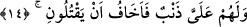

risâlet işine ortak etmesini istedi. Çünkü onu işe ortak etmeseydi, Mûsâ (a.s.)’ın
gönderilmesinden istenen maslahat hâsıl olmayacaktı.
Mûsâ (a.s.)’ın dilindeki tutukluğun sebebi, Fir’avn’un imtihanı sırasında ateş koru ile
yanmasından dolayıdır. Nitekim Attâr der ki:
Musa gibi şimdi ateş leğeninde kalmışsın
Çocuk ve Firavunluğun önünde ve ağzın kor dolu
Mûsâ (a.s.) koru eline aldığı zaman parmakları yanmamıştır. Bu, Fir’avn’un yanına
tebliğ için tekrar döndüğünde fasîh konuşmasının bir mûcize olması içindir. Bu yüzden
bazıları: “Dâvetten sonra da bu yanmanın eserinin onun dilinde var olduğunu söyleyen
hata etmiştir.” demiştir.
Büyüklerden birisi der ki: “Vâizin vaazında Allah’ı gözetmesi ve peygamberlerin
cemâlini lekeleyecek konuşmalardan, onların hurmetlerini zedelemekten, onlar hakkında
avâmın diliyle konuşmaktan ve onlar hakkında sû-i zanda bulunmaktan sakınmalıdır.
Aksi hade Allah ve meleklerin gazabına uğrar.”
14. Onların bana isnad ettikleri bir suç da var. Bundan ötürü beni
öldürmelerinden korkuyorum.
“Onların bana isnad ettikleri bir suç da var.” Yâni Fir’avn kavminin benim
zimmetimde bir günahın/suçun cezası ve gerektirdiği neticesi var. Kasdedilen sıbtîyi
müdâfaa ederken kıbtîyi öldürmesidir. Mûsâ (a.s.)’ın buna “günah/suç” demesi, onların
iddiâsına göredir.
Kâşifî der ki: “Yâni onlar bana günah iddiâsında bulunurlar. Kasdedilen kıbtînin
öldürülmesidir. Onlara göre bu günahtır.”
“Bundan ötürü” tek başıma onlara gidersem risâlet görevimden önce öldürdüğüm
kıbtî karşılığında “beni öldürmelerinden korkuyorum.” Harun (a.s.)’ın ise böyle bir
suçu yok.
Büyüklerden birisi der ki: Mûsâ (a.s.)’da tabiî olarak korkunun hâsıl olması,
şaşılacak bir durum değildir. Beşeriyet sıfatları, peygamberlerde de vardır. Onların
kalbleri ise ma’rifet üzere sâbittir.
Bilesin ki bu ve önceki sözler Mûsâ (a.s.) tarafından ne mâzeret ileri sürme, ne
duraklama, ne de emre uymada acele etmeyi terktir. Bilakis meydana gelmeden önce
gelmesi beklenen bir sıkıntıyı aşmaya çalışmaktan ve dâvet işinde yardım istemekten
ibârettir. Hakîkat bakımından Mûsâ (a.s.) Rabbinden temkîni elde etmek için kendisinde
telvîni ızhar etmiştir. Allah da onu emniyete almış, ondan her külfeti izâle etmiştir.
Nitekim Allah Teâlâ şöyle buyurmuştur: